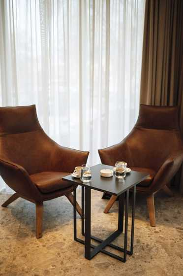
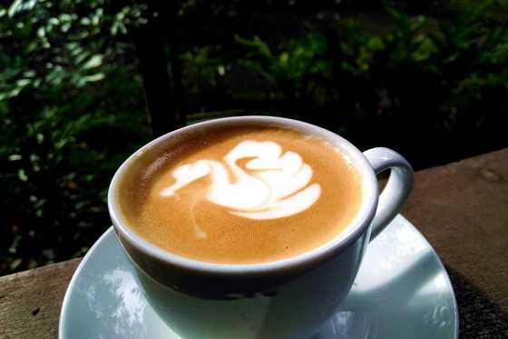
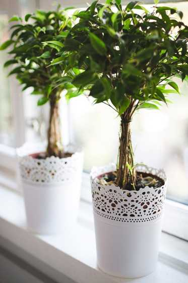
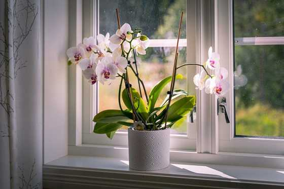
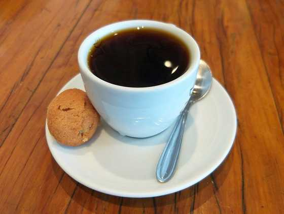
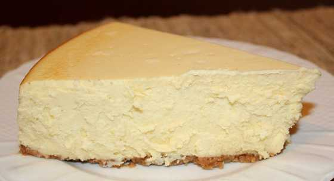
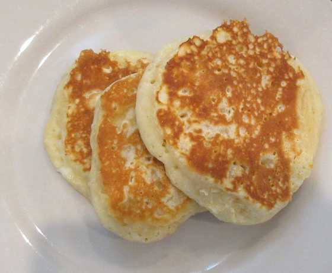
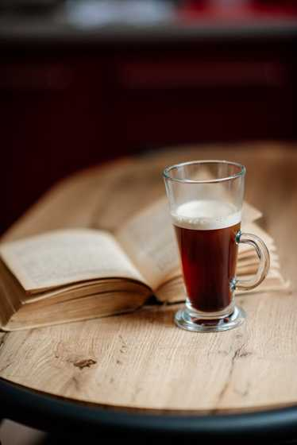

栃木県那須塩原市・黒磯駅から歩いて
靴を脱いで、木のぬくもりの中で
ひと息つく小さなカフェ。
夢だったカフェを故郷の黒磯で。店主さんがひとりで営む、席の少ないお店です。
お店の由来・想い
東京から地元へ。長年の夢を形に。
紹介記事によると、oto cafe(オトカフェ)は、東京でパン屋などの飲食店の経験を積んだ店主さんが地元の栃木にUターンし、長年の夢だったカフェとして2024年5月30日にオープンしたお店です。店主さんがおひとりで営み、木のぬくもりを感じる店内には、ソファー席、デッキ席、壁向きのカウンターなどがあります。
店内は靴を脱いで上がる形式(靴下をご用意ください)で、入店は3名までと案内されています。夏はかき氷が人気で、秋から春にかけてはパンを使った軽食が予定されている、と紹介されています。
情報源: CafeLoverBlog / CafeSnap / Instagram
店名の意味は確認できていないため記載していません。見出しの言い回しは制作側の表現です。
イメージ
コーヒーと、窓辺と、やさしい時間。
写真は雰囲気を伝えるフリー素材です。お店の実際の様子や提供品ではありません。













口コミ
ご来店の声(イメージ例)
イメージ例
靴を脱ぐと自然と肩の力が抜けて、ついゆっくりしてしまいました。
イメージ例
ふわふわのかき氷を、静かな店内でゆっくりいただけました。
イメージ例
木の雰囲気が落ち着く、ひとりでも入りやすいお店です。
上の3件は制作側が作成したイメージ例で、実際のお客様の声ではありません。
アクセス
お店のご案内
| 所在地 | 〒325-0057 栃木県那須塩原市黒磯幸町5-24 |
|---|---|
| 電話 | 準備中 |
| 営業時間 | 準備中 |
| 定休日 | 準備中 |
| SNS | Instagram @otocafe_2024 |
営業時間などは変更されることがあるため、最新情報はInstagramでご確認ください。